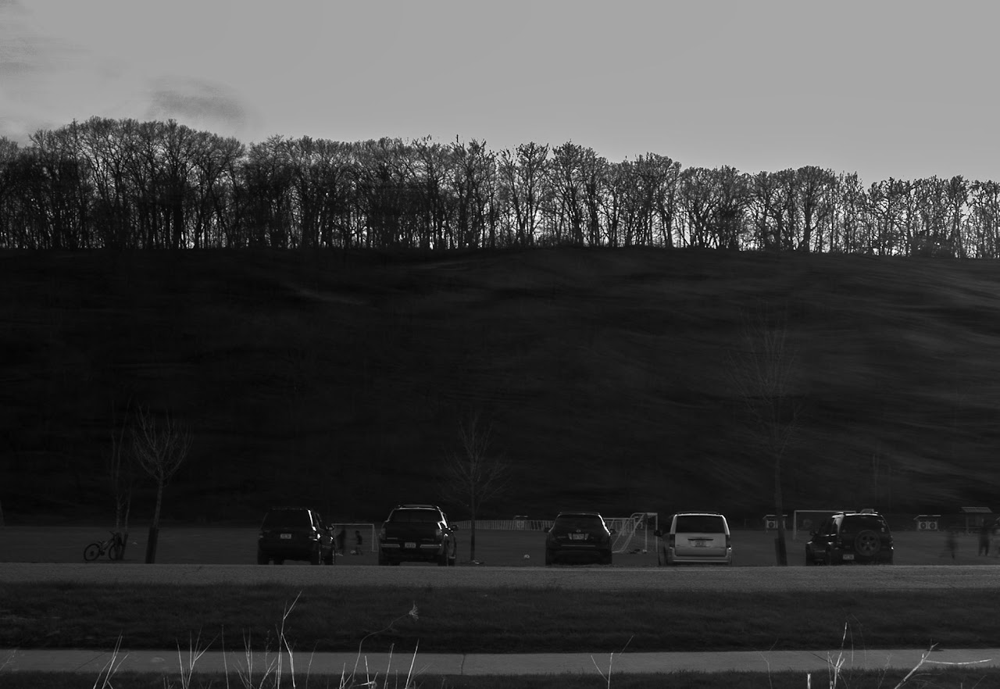

Automate the
Boring Part.
The bridge between raw file dumps and professional editing software.
Technical Triage, Not Manual Sorting
Most tools look at metadata. Kuonix looks at pixels.
Staging Area & Surgical Culling
Drag and drop entire shoots into the staging area. Use the Library view to preview and delete specific files before processing begins.
Works with RAW Files
Direct support for professional camera formats: CR2, CR3, NEF, ARW, DNG, ORF, RAF, RW2, SRW, PEF, and more.
No conversion needed—process your RAW files directly in the app.
Native Bridge Architecture
Link your own executables (photoshop.exe, krita.exe). Export opens sorted folders directly in your editor with optional Admin rights.
Detects 23+ Image Quality Issues
Intelligent analysis identifies specific problems, not just generic sorting.
Exposure
2 types detected
- • Underexposure
- • Overexposure
Contrast
2 types detected
- • Low contrast
- • High contrast
Saturation
7 types detected
- • Dull colors
- • Global oversaturation
- • Red/Green/Blue channel
- • Cyan/Magenta/Yellow channel
Color Cast
6 directions detected
- • Red cast
- • Yellow cast
- • Green cast
- • Cyan/Blue/Magenta cast
Noise Analysis
1 type detected
- • Shadow noise detection
01.
Ingest & Cull
Drop your entire shoot into the Staging Area. The Upload & Analyze page shows a drag-and-drop interface where you can import hundreds of RAW files at once.
Use the Library view for surgical, single-file deletion before processing begins.

02.
Auto-Analyze & Sort
The Library grid view displays all imported images with detected issue tags overlaid on each thumbnail.
Pixel-based analysis identifies 23+ quality issues—organizing images by their specific correction needs, not generic ratings.

03.
Direct Execution
The Export dialog lets you organize images into folders by issue type. Configure your native editor path (Photoshop, Lightroom, Krita) to open sorted folders directly.
Zero cloud uploads, total data privacy, and native system integration.

Pipeline Accelerator, Not Replacement


Ready to Accelerate Your Pipeline?
Kuonix v1.0 Open Beta. A desktop utility for Windows. Free, local, and private.
Download for Windows